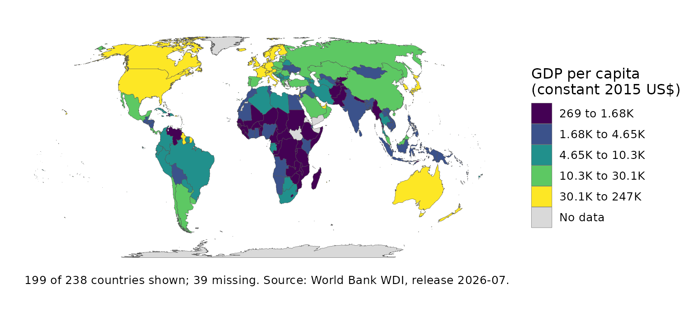

A published map should say what it shows to a reader who cannot see it, be readable with a colour-vision deficiency, and say where its numbers came from.
Alt text
Every map verb sets its alt text from the final plot (Lundgard & Satyanarayan’s levels 1 and 2):
map_alt_text(p)
#> [1] "Choropleth map of GDP per capita (constant 2015 US$) (gdp_per_capita) by country, Equal Earth projection. Coloured in 5 quantile classes from 269 to 247K. 199 of 238 countries have data. Highest: Monaco (247K), Bermuda (117K), Luxembourg (104K). Lowest: Burundi (269), Afghanistan (374), Central African Republic (390). Europe has the highest median (22.7K). 16% of countries have no data."knitr does not ask ggplot2 for it, so set it on the chunk from a plot built in an earlier chunk, as this page does:
p
Colour vision
check_palette() simulates the three common deficiencies
and reports the smallest difference between adjacent classes:
check_palette(p)
#> # A tibble: 4 × 3
#> vision min_delta_e between
#> <chr> <dbl> <chr>
#> 1 normal 37.7 269 to 1.68K and 1.68K to 4.65K
#> 2 deuteranopia 19.5 269 to 1.68K and 1.68K to 4.65K
#> 3 protanopia 23.9 269 to 1.68K and 1.68K to 4.65K
#> 4 tritanopia 18.2 4.65K to 10.3K and 10.3K to 30.1KProvenance and citation
map_provenance(p)
cat(map_citation(p), sep = "\n\n")
#> World Bank WDI (2026). "GDP per capita (constant 2015 US$)." Series
#> NY.GDP.PCAP.KD; release 2026-07; accessed 2026-10-02; licence CC BY
#> 4.0.
#>
#> Natural Earth (2024). _Natural Earth: Free vector and raster map data_.
#> Natural Earth. Version 5.1.1, 1:50m admin-0 countries; public domain,
#> <https://www.naturalearthdata.com/>.
#>
#> Savric B, Patterson T, Jenny B (2019). "The Equal Earth map
#> projection." _International Journal of Geographical Information
#> Science_, *33*(3), 454-465. doi:10.1080/13658816.2018.1504949
#> <https://doi.org/10.1080/13658816.2018.1504949>.
#>
#> Brewer C, Pickle L (2002). "Evaluation of methods for classifying
#> epidemiological data on choropleth maps in series." _Annals of the
#> Association of American Geographers_, *92*(4), 662-681.
#> doi:10.1111/1467-8306.00310 <https://doi.org/10.1111/1467-8306.00310>.